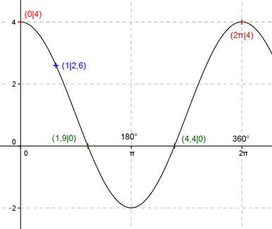

Aufgabe 198 Ergänzen Sie die Wertetabelle für x zwischen 0 und 2π: y = 3 cos(x) + 1 x 1 0 oder 2π y 2,6 4 Amplitude = 3 ; Periode = 2π; cos x ist um 1 Einheit nach oben verschoben.  Berechnung der Nullstellen: 3 cos (x) + 1 = 0 -1 --> 3 cos x = -1 |:3 --> cos x = -1/3 --> x = arc cos -1/3 --> 1,9 * 180° x1 = 1,9 oder ------------ = 108,9° π x22 = (2π - 1,9) = 4,4 oder 252,1° gerundet. Funktionswert an einer Stelle x ermitteln: 1 * 180° x = 1 oder ---------- = 57,3° π f(1) = 3 cos (1) + 1 = 3 cos (57,3°) + 1 = 2,6 gerundet. Berechnung der x-Werte für y = f(x) = 4: f((x)) = 4 eingesetzt, existiert zwischen 0 und π bzw. zwischen 0° und 180° und zwischen π und 2π bzw. 180° und 360° (siehe Graph). 3 cos(x) + 1 = 4 |-1 --> 3cosx = 3 |:3 --> cos x = 1 --> x = arc cos 1 = 0 --> x = 0 + k * 2π --> x1 = 0 oder 0° x2 = 2π oder 360°.